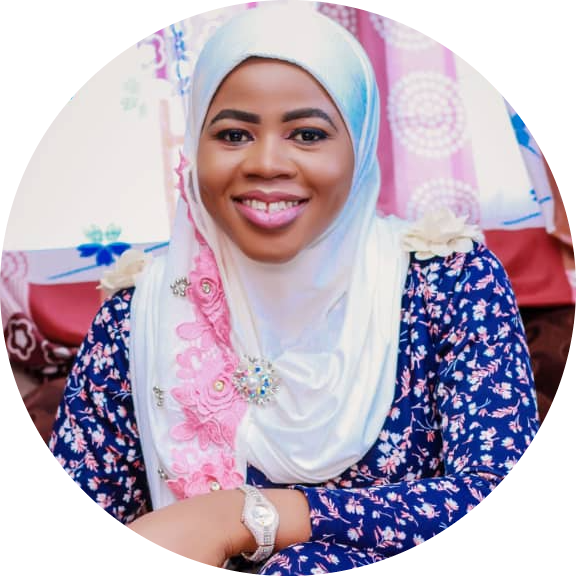

|  |
Abdulsalam Abiola ZeenatWeb Developer/Mechanical Engineer |
A Graduate in Mechanical Engineering aspiring and seeking opportunities in the tech. sectors having great challenges, responsibilities and innovations with prospects for career advancement and dynamic organizational structure. A resourceful, dedicated, motivated, hardworking, result driven, team oriented, inquisitive personnel yearning to learn with great potential and enthusiasm, possessing the ability to deliver under pressure. A passionate contributor either as a team member or leader whilst developing personal and professional skills to the organizational growth.
|
|
| Company/Dates | Job Description | Achievements |
|---|---|---|
|
Frigoglass Nigeria (Guinea Plant) Agbara, Ogun State JUNE 2019 – March 2022 (Mould Specialist) |
|
|
|
Frigoglass Nigeria (Guinea Plant) Agbara, Ogun State April 2018 – May 2019 (Graduate Engineering Technical Trainee) |
|
|
LADOKE AKINTOLA UNIVERSITY OF TECHNOLOGY,OYO STATE,NIGERIA.
2 ndClass Upper Division (CGPA=4.28)